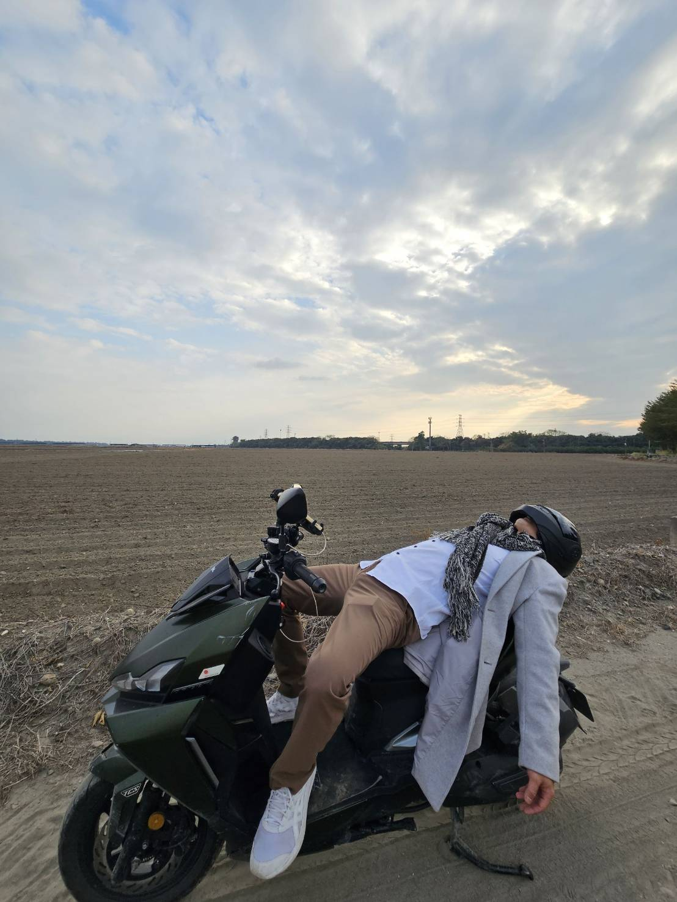
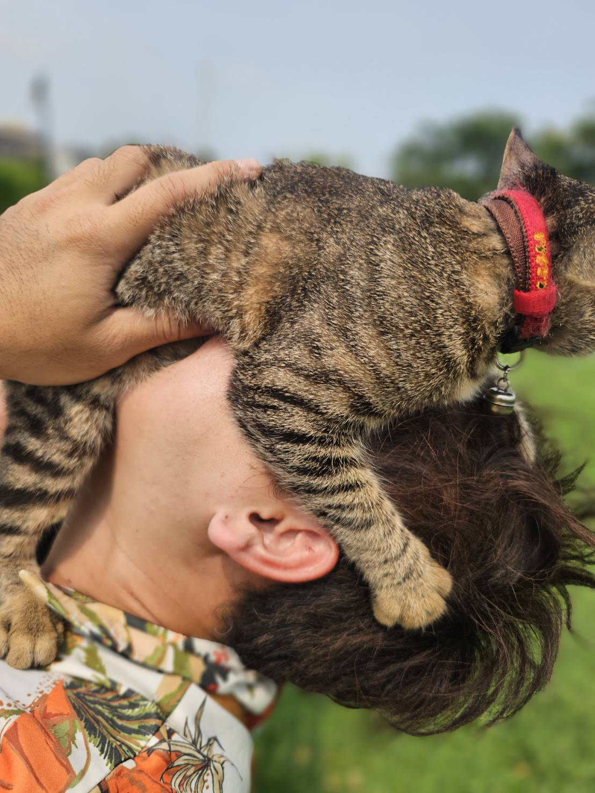
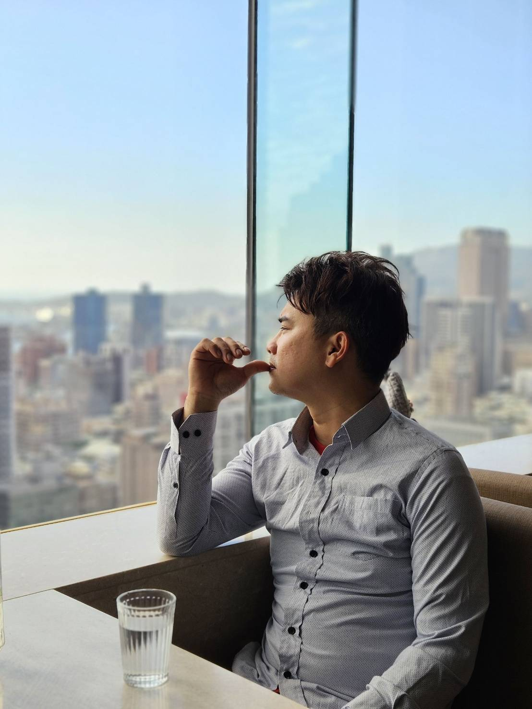
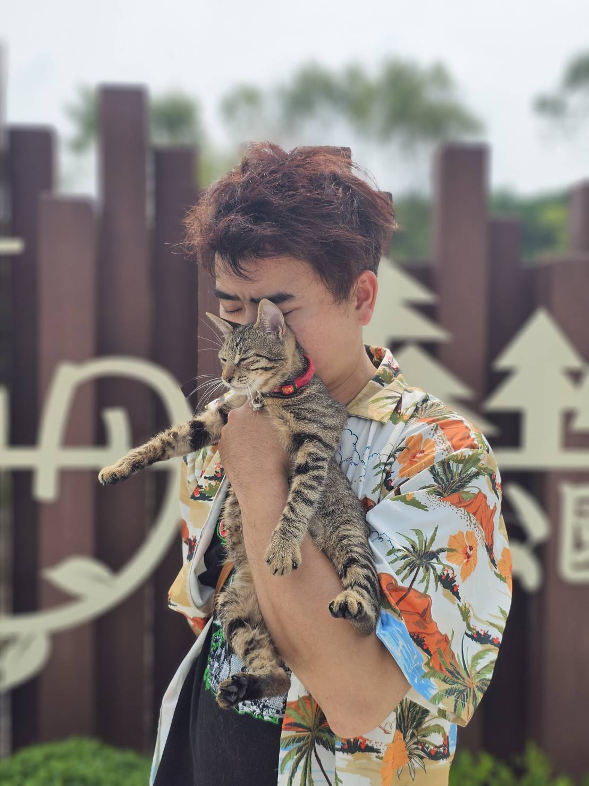
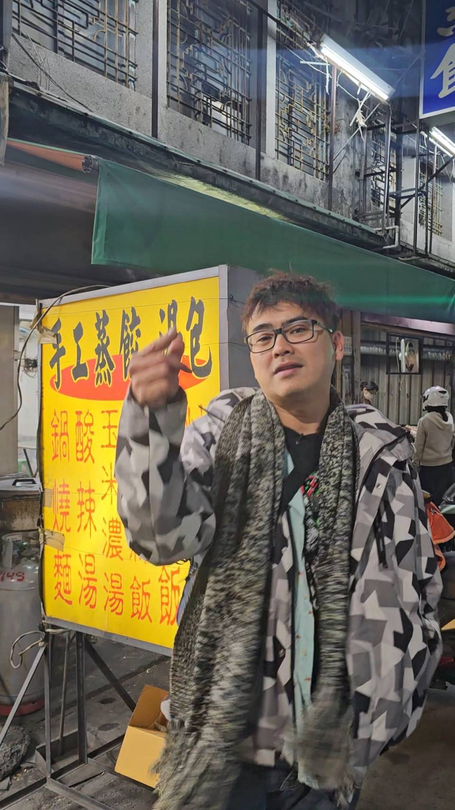

《我愛我故在》
肥頭黃哲憲的生命紀錄
將近四十歲，我終於願意把自己攤開。
我有生母，卻從沒見過親生父親。是養父母把我養大，讓我有飯吃、有書念、有地方能回去。懂事後，我心裡一直有個念頭——我不能只是活著，我要活得有重量。至少有一天回頭看，不會對不起這條命。
那之後的人生，也像一直在浪裡掙扎。幾次車禍，腳斷三節。躺在病床上看著天花板時，我第一次真正明白——原來人真的可能突然就沒了。
後來，我也經歷過被誤會、被設局、被陷害。有些痛，不是輸了，而是人心讓你發寒。甚至曾經覺得，只要再走錯一步，也許就回不了頭。

我做過很多工作，也走過很多路。五年的傳直銷生涯，我帶過六百多人往前衝。曾經站在台上被掌聲包圍，也曾在背後被質疑、被否定。我才明白，信任一旦破裂，比失敗還痛。
我跟兄弟一起務農，在烈日下曬到皮膚發燙；開過書片店，守著理想卻敵不過現實；學過天然農業，重新理解土地其實比人更誠實；也摸索過露營區經營與車泊文化。

其實，我不笨。我學東西很快，也很願意拚。以前的文筆甚至好到，差一點就能出書。現在回頭看，那些沒完成的事，未必是遺憾。有時候，它只是人生的一部分。
這一路，我有過高峰，也跌進過谷底。被人捧過，也被人看不起過。被需要過，也被丟下過。
但奇怪的是——每一次命運差點把我帶走，我都還活著。於是我開始想，也許活著本身，就是一種任務。不是為了炫耀，也不是為了證明給誰看。而是為了對得起那些曾經拉我一把的人；對得起那個從小就不服輸的自己。
如果有一天，真的有人提起黃哲憲。我希望他們記得的不是我賺了多少錢。而是——這個人命很硬，心很真。跌倒很多次，還是願意站起來。
我愛我走過的路。哪怕滿是傷口。因為沒有那些傷，就不會有現在這個還站著說話的黃哲憲。
這不是英雄故事。這只是一個差點被海帶走、差點被命運壓垮，卻直到今天，依然想繼續往前走的男人的故事。
而這個故事，還沒寫完。
追蹤瘋狂肥頭的日常
與我一起看見屏東，感受生活的最真實樣貌

Facebook
生活紀錄・在地觀點・心情分享

Instagram
光影瞬間・日常碎片・土地故事

TikTok
動態影音・草根趣味・真實互動